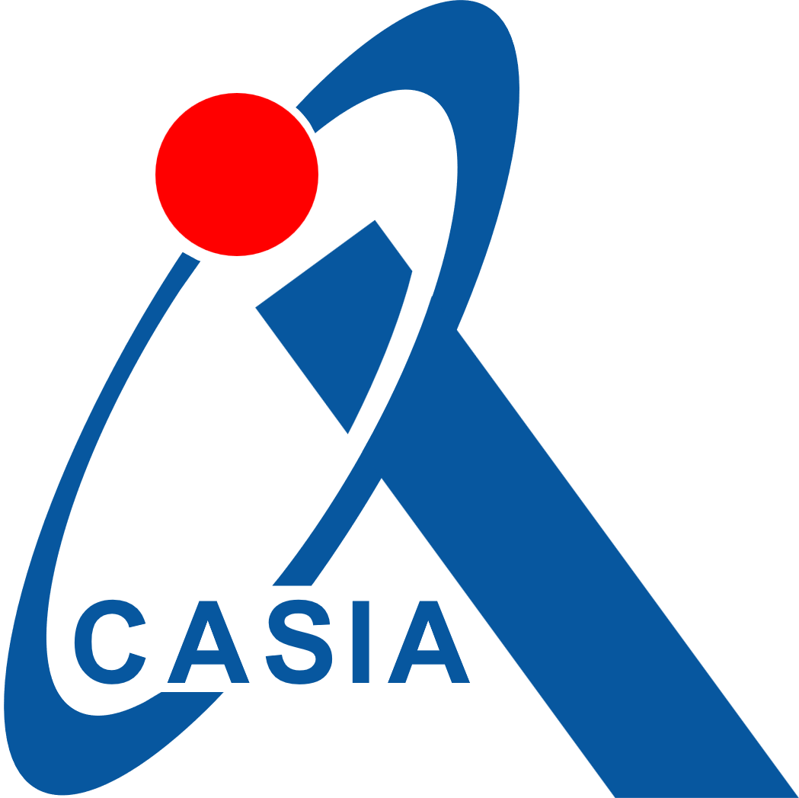
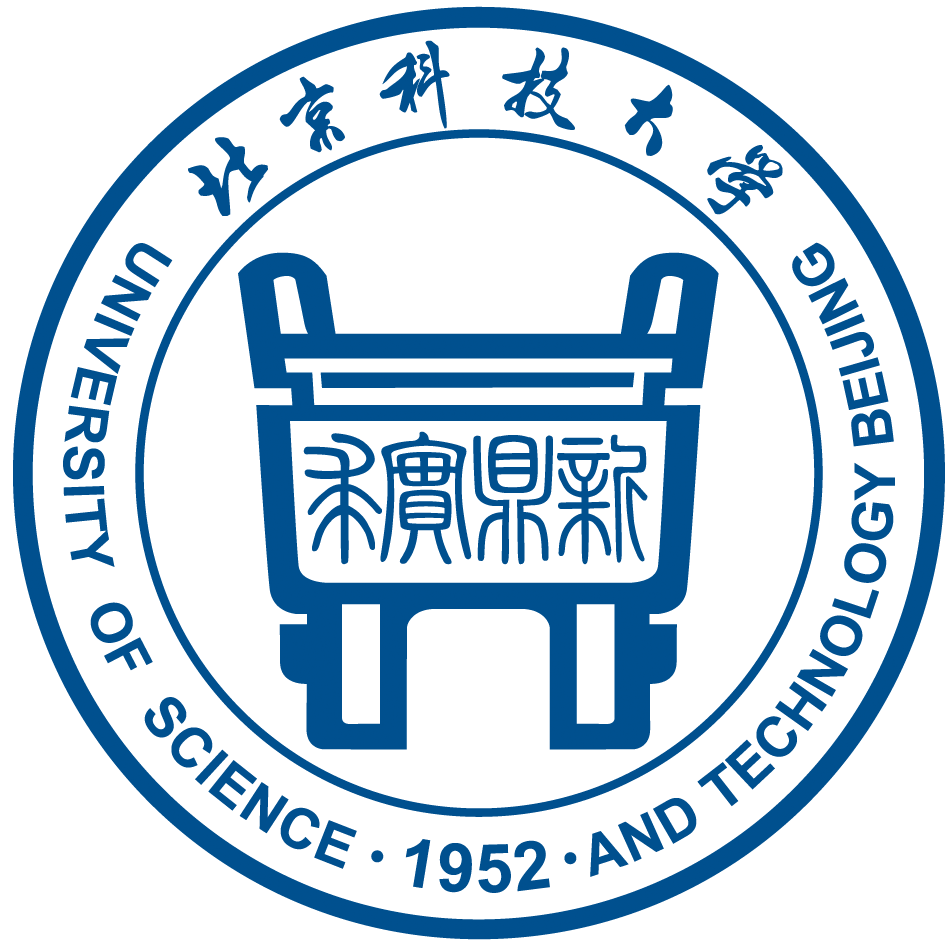
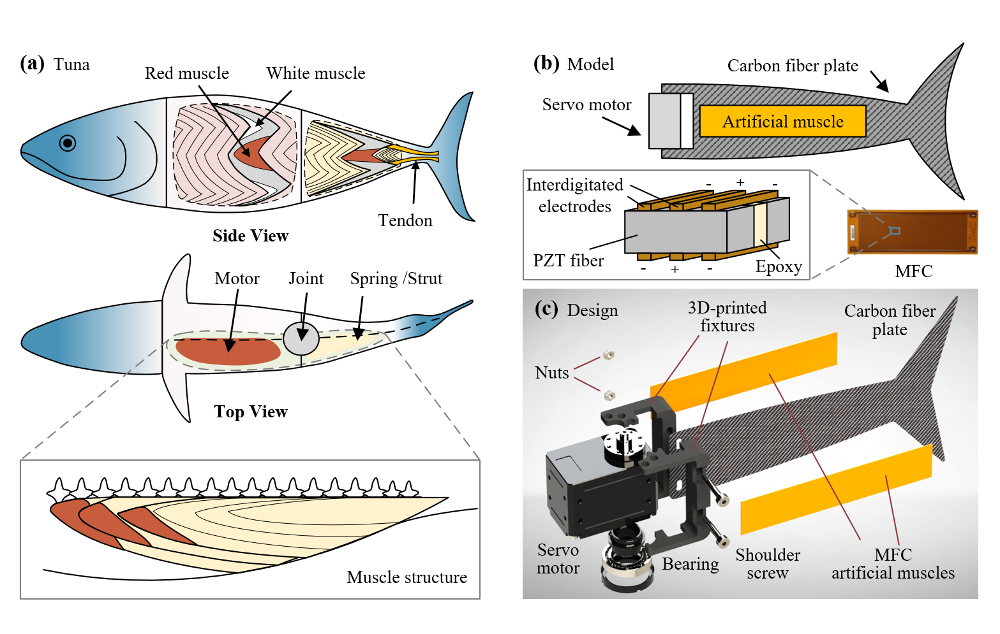
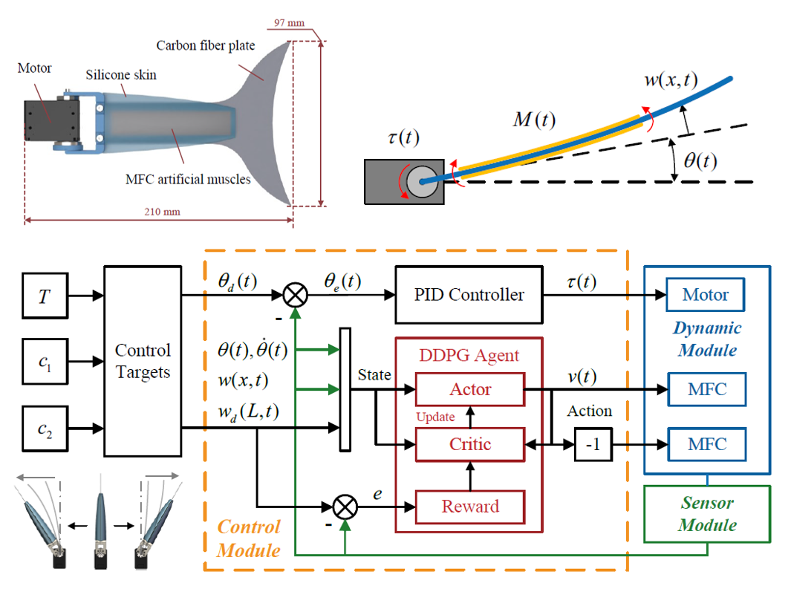
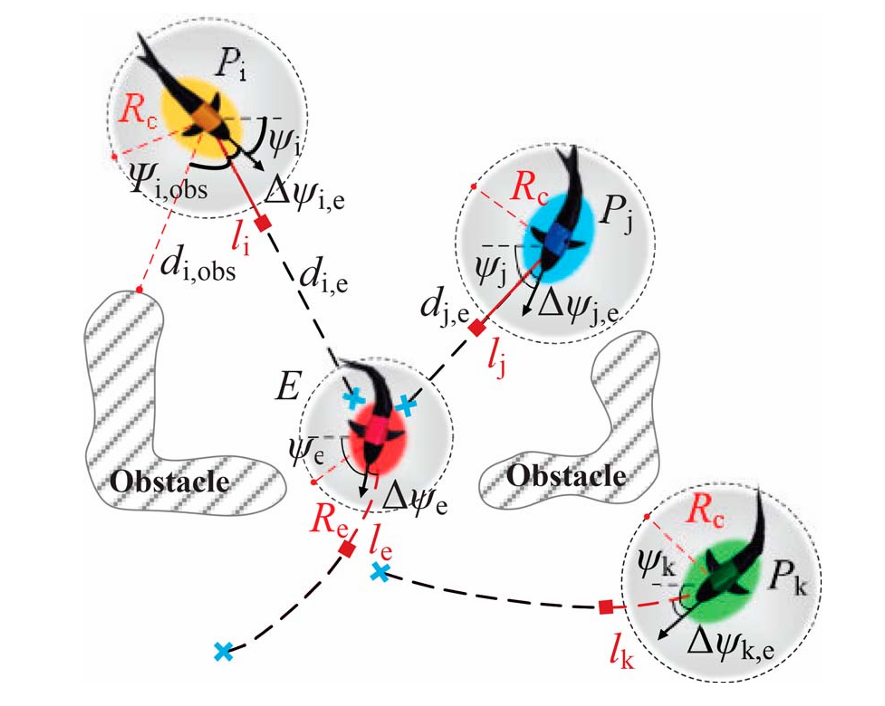
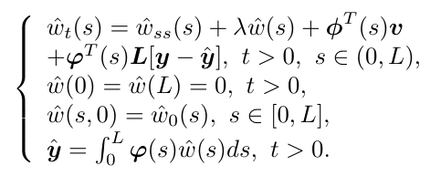

Junwen Gu | 顾俊文
I am a Ph.D. candidate at the Key Laboratory of Cognition and Decision Intelligence for Complex Systems, Institute of Automation, Chinese Academy of Sciences (CASIA), where I have been advised by Prof. Zhengxin Wu since 2022. Previously, I received my B.Eng. degree in Automation from the University of Science and Technology Beijing (USTB).
My research primarily focuses on underwater robotics, where I strive to explore full-stack technologies and develop advanced robotic systems from a holistic perspective. I am currently exploring Embodied AI (RL and VLA) to enhance robotic autonomy and investigating how system architectures shape intelligence across broader domains, including automated floor plan design.
Education

Institute of Automation, Chinese Academy of Sciences
Doctor of Philosophy - PhD, Robotics
Sept 2022 - June 2027 (Expected)

University of Science and Technology Beijing
Bachelor of Engineering - BE, Automation
Sept 2018 - June 2022
TOP 5% | Dean's Medal | National Scholarship (three times)
Research
* indicates equal contribution, † indicates corresponding author
First-Author Publications


IEEE Transactions on Robotics (TRO), 41, 159-179, 2025
Paper / 中文介绍
We developed a flexible fishtail actuated by artificial muscles. Through a combination of PDE-based modeling and DRL controller, the system achieves real-time deformation control with up to a 203% propulsion enhancement.


arXiv preprint arXiv:2510.07869, 2025
Paper / Project Page
We present USIM, a underwater VLA dataset across 20 diverse tasks, and U0, a VLA model achieving an 80% success rate in underwater tasks including inspection, navigation, and tracking.


2024 IEEE International Conference on Cyborg and Bionic Systems (CBS), 171-176
Paper
This work presents a flexible fishtail using SAC reinforcement learning to optimize turning agility. It enables adjustable compliance for enhanced fluid interactivity.
Co-authored Publications


IEEE Transactions on Industrial Electronics (TIE), 72 (8), 8290-8300, 2025
Paper
We proposed a decentralized cooperative pursuit strategy for multi-robotic fish using curriculum learning. The algorithm enables adaptive coordination in complex underwater environments.


2021 8th International Conference on Information, Cybernetics, and Computational Social Systems (ICCSS)
Paper
We developed a PDE observer and quantization feedback compensator for linear parabolic PDE systems. The framework ensures exponential stability, validated through Lyapunov-based proofs and numerical simulations.